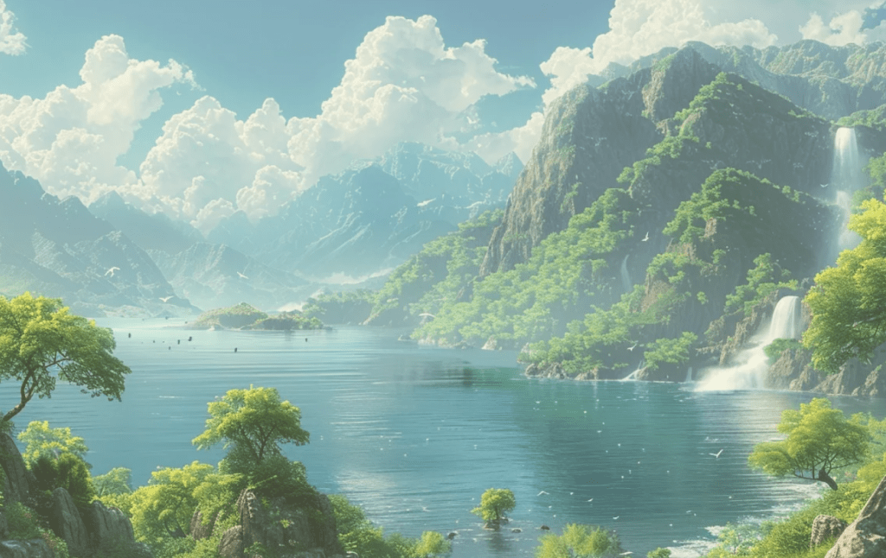
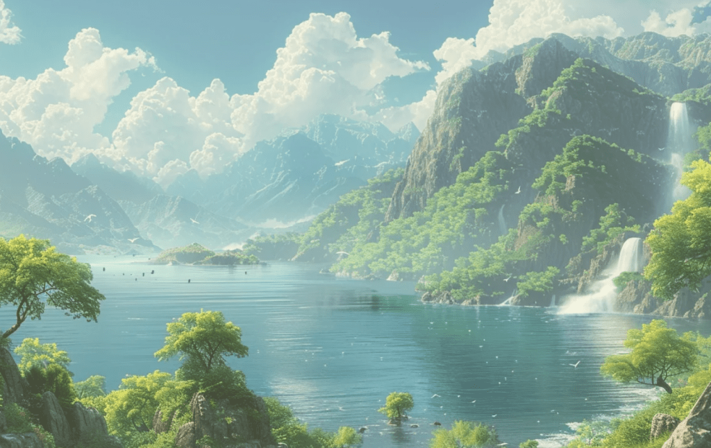

Viaggia con noi
 
 Benvenuti a Whisperbay, coste magiche di Arcanterra, dove il mare incontra il mistero e l'avventura prende vita. Durante questo viaggio vi immergerete in un mondo di meraviglie ancestrali, dove antiche leggende si fondono con la realtà e creature leggendarie popolano le acque cristalline. In questo viaggio esplorerete le sfumature affascinanti di Whisperbay, una baia avvolta nell'atmosfera misteriosa che solo Arcanterra può offrire. Siate pronti a lasciarvi rapire dai sussurri del mare mentre scoprite i suoi segreti più profondi. Le acque di Whisperbay celano creature misteriose pronte a essere svelate al vostro sguardo avventuroso. Tra i flutti potreste incrociare lo sguardo ipnotico di un Kraken gigantesco, sentire la melodia affascinante di una Sirena che danza tra le onde, o essere affascinati dalla maestosità di un Kelpie che emerge dall'abisso. Ma non è solo il mare a catturare i sensi qui a Whisperbay; lasciate che il richiamo all'avventura vi guidi alla scoperta delle spiagge dorate e delle scogliere battute dal vento. Preparatevi a vivere un'esperienza unica, dove le acque di Whisperbay nascondono segreti millenari e creature misteriose pronte ad affascinarvi. Siete pronti ad abbandonarvi alla bellezza selvaggia di Whisperbay e a lasciarvi incantare dalla sua essenza misteriosa? Il viaggio verso l'ignoto vi attende.
Viaggio per scettici
Viaggio alla scoperta di leggende e criptidi marini, un'esperienza unica che invita alla riflessione critica e che renderà consapevoli del mistero. Fatti e leggende che si uniscono in un viaggio tra meraviglia e razionalità.
Durata del viaggio
Il viaggio avrà una durata di 10 giorni durante la quale avrete l'opportunitò di immergervi completamente nel mistero della zona costiera di Whisperbay guidati dalle nostre guide con un programma ricco di avventure e scoperte.
Costo tour
Il tuor ha un costo di 1000€ a persona. Durante il tuor si alloggerà nel resort sull'isola di Arcanterra, un resort scavato nelle grotte dell'isola, un posto magico e misterioso allo stesso tempo.
Arrivati sull costa di Whisperbay questi tre giorni saranno dedicati a scoprire la costa incantata. Scoprirete i miti e le leggende intorno ai cryptidi che popolano la costa. Vi immergerete nelle acque cristalline e scoprirete come vivono le creature misteriose del mare.
L'avventura si fa ancora più emozionante con un'immersione profonda nelle acque misteriose di Whisperbay. Equipaggiati per un'esplorazione subacquea, visiteremo una grotta leggendaria, nota per essere il luogo dove il fondatore dell'isola fu attirato dal richiamo ammaliante delle sirene. Questa grotta nascosta rivelerà segreti antichi e meraviglie sommerse.

Faremo un'immersione ancora più profonda nelle acque di Whisperbay. Durante una notte di luna piena, esploreremo una grotta segreta illuminata solo dalla luce lunare, un luogo leggendario. Qui, avremo l'opportunità di incontrare il temuto Kraken e il Kelpie, un cavallo d'acqua dalle sembianze ipnotiche. Osserveremo questi maestosi criptidi nel loro habitat naturale.
Maschera, boccaglio e pinne: essenziali per esplorare le acque chiare e profonde di Whisperbay.
Torcia subacquea: indispensabile per esplorare le grotte e i recessi bui del mare, soprattutto durante l'immersione notturna.
Muta subacquea per mantenere il calore durante le immersioni e proteggere dalla temperatura dell'acqua.
Occhiali da Visione Criptica: speciali occhiali che, una volta indossati, permettono di vedere segnali invisibili lasciati dai criptidi, come tracce di luminescenza sulle rocce o impronte sabbiose misteriose.
Mappa delle Maree Celesti: una mappa magica che non solo indica le correnti e le maree, ma rivela anche sentieri segreti e passaggi nascosti verso le grotte e le cripte sottomarine di Whisperbay.
Nel viaggio a Whisperbay, ti attendono sistemazioni incantevoli in strutture tematiche come le Grotte Incantate o le Dimore dei Draghi, immerse nella magia dell'isola. Ogni giorno comincerà con pasti deliziosi che celebrano la cucina locale, seguiti da avventure guidate da esperti. Esplorerai la spiaggia di Whisperbay alla ricerca di indizi e leggende sui criptidi come il Kraken e la Sirena, parteciperai a emozionanti escursioni in barca lungo la costa e ti immergerai nelle profondità marine durante escursioni subacquee, anche di notte, con attrezzatura fornita. Le serate saranno animate da eventi speciali e storie intorno al fuoco, mentre il nostro team sarà sempre a disposizione per garantire che ogni momento del tuo viaggio sia indimenticabile e pieno di scoperte.
Durante il nostro straordinario viaggio a Whisperbay, ci sono alcune regole speciali che dovremo seguire per garantire un’esperienza magica e sicura con i criptidi dell’isola. Innanzitutto, è fondamentale rispettare l’ambiente marino, ci assicureremo anche di non disturbare le delicate armonie naturali che rendono questo luogo così incantato. Quando ci imbatterei nei criptidi, come il Kraken, la Sirena e il Kelpie, osserveremo queste magnifiche creature con rispetto e curiosità, evitando movimenti bruschi o forti. È importante mantenere una distanza di sicurezza, seguendo sempre le indicazioni delle nostre guide esperte, che conoscono bene i comportamenti di questi esseri misteriosi.
Ecco alcune regole che si dovrà seguire
Occhiali della Verità Incantata: Prima di ogni incontro, indosseremo gli Occhiali della Verità Incantata, che ci permetteranno di vedere i criptidi in tutta la loro gloria e ci aiuteranno a leggere le loro emozioni.
Danza del Kraken: Se avvisteremo il Kraken, faremo la Danza del Kraken, una serie di movimenti lenti e ondulati che simuleranno i tentacoli dell’antico mostro. Questo rito è pensato per mostrare al Kraken che siamo amici e non minacce.
Segnale di Rispetto: un semplice gesto con la mano aperta sul cuore. Questo segnale mostra al Kelpie che veniamo in pace e con rispetto per il suo regno acquatico.
Benvenuti nella foresta incantata di Elendrath, un angolo segreto dell'isola di Arcanterra dove la natura si intreccia con il mistero e la magia. Qui, tra alberi millenari e fiumi cristallini, ogni passo vi avvicina a un mondo nascosto, popolato da creature leggendarie e paesaggi mozzafiato. Camminando tra i sentieri ombreggiati, vi immergerete in un ambiente di pura meraviglia, dove la flora rigogliosa e i suoni della natura creano un'atmosfera unica e suggestiva. I raggi del sole filtrano attraverso le fronde degli alberi, creando giochi di luce che sembrano usciti da un sogno. I fiumi serpeggianti offrono un rifugio tranquillo e cristallino, perfetto per momenti di relax e riflessione. Ma la foresta di Elendrath non è solo un paradiso naturale. È anche la dimora di criptidi straordinari, esseri che sfidano l'immaginazione e aspettano di essere scoperti. Immaginate di scorgere una Pixie scintillante che danza tra i fiori, di sentire il ruggito potente del leggendario Fenrir in lontananza, o di intravedere un fugace Jakalope che si nasconde tra i cespugli.Preparatevi a vivere un'avventura senza pari, dove ogni sentiero può portare a una nuova scoperta e ogni momento è un'occasione per creare ricordi indimenticabili. La foresta di Elendrath vi aspetta, pronta a svelare i suoi segreti a chi è disposto ad ascoltare la sua antica voce e a esplorare i suoi magici confini. Prenotate ora il vostro viaggio e lasciatevi trasportare in un mondo dove la realtà e la fantasia si incontrano, e dove la meraviglia è all'ordine del giorno. Arcanterra vi aspetta.
Viaggio per famiglie
La foresta di Elendrath è il luogo ideale per una vacanza in famiglia, dove grandi e piccoli possono vivere insieme un'avventura indimenticabile. Esplorate sentieri incantati, scoprite creature misteriose in un ambiete magico e affascinante
Durata del viaggio
Preparati per un viaggio indimenticabile di 11 giorni nella magica foresta di Elendrath. Esplora sentieri incantati, scopri criptidi affascinanti e immergiti nella bellezza selvaggia di Arcanterra dove magia e natura si incontrano.
Costo tour
Il tuor ha un costo di 1000€ per gli adulti e 200€ per i bambini. Durante il tour alloggerete in suggestive case sull'albero, libere tra gli alberi, dove potrete osservare la magia delle Pixie.
Nei primi quattro giorni del nostro viaggio nella foresta di Elendrath, ci immergeremo nelle profondità nascoste di antiche grotte. Qui, tra stalattiti scintillanti e misteriosi passaggi, avremo l'opportunità di incontrare le leggendarie Pixie. Queste affascinanti creature, con ali e poteri magici, popolano questi ambienti segreti.
Ci immergeremo completamente nei segreti nascosti di questo luogo magico, attraverseremo fitte foreste, seguendo sentieri antichi e ruscelli cristallini che scorrono tra alberi millenari e macchie di fiori selvatici. Durante il nostro cammino vedremo i leggendari Jakalope, creature timide e sfuggenti con corna ramificate e una grazia naturale.
Ci addentreremo sempre più nella maestosa foresta di alberi di drago di Elendrath, simili agli imponenti alberi del sangue di drago. Qui, avremo l'incontro epico con il Fenrir, il leggendario lupo delle antiche storie. Preparatevi per un'avventura intensa e misteriosa, immergendovi completamente nella natura e nei segreti di Arcanterra.
Scarpe Robuste: Scarponcini da trekking o calzature resistenti per camminare su terreni irregolari e sentieri naturali.
Binocolo o Macchina Fotografica: Per catturare immagini delle creature e dei paesaggi mozzafiato che incontrerete lungo il percorso.
Abbigliamento Adeguato: Indossare abiti comodi e adatti alle condizioni climatiche, come strati leggeri per il giorno e qualcosa di più caldo per la sera.
Elisir di Protezione Naturale: Una pozione magica che offre protezione contro gli elementi naturali e le creature incantate della foresta.
Bussola dei Venti: Una bussola speciale che guida il viaggiatore attraverso sentieri incantati e attraverso le barriere dimensionali della foresta.
Nel nostro viaggio nella foresta di Elendrath, avrete l'opportunità di immergervi completamente nell'incanto di Arcanterra con esperienze curate per soddisfare l'anima avventurosa di ogni viaggiatore. Sarete accolti in affascinanti case sugli alberi, dove ogni notte sarà un'esperienza magica sotto le stelle. Le nostre guide locali vi condurranno attraverso intricati sentieri e grotte misteriose, svelando segreti della natura e dei criptidi leggendari come le giocose Pixie, i timidi Jakalope e il maestoso Fenrir. Durante il viaggio, assaporerete i sapori autentici con ingredienti locali, mentre la bellezza selvaggia di Elendrath si svela davanti ai vostri occhi, creando ricordi indelebili di una terra dove la magia e la realtà si intrecciano in modo indimenticabile.
Durante il nostro straordinario viaggio a Elendrath, ci sono alcune regole speciali che dovremo seguire per garantire un’esperienza magica e sicura con i criptidi dell’isola. Innanzitutto, è fondamentale rispettare la foresta, ci assicureremo anche di non disturbare le delicate armonie naturali che rendono questo luogo così incantato. Quando ci imbatterei nei criptidi, come la Pixie, Jakalope e Fenrir osserveremo queste magnifiche creature con rispetto e curiosità, evitando movimenti bruschi o forti. È importante mantenere una distanza di sicurezza, seguendo sempre le indicazioni delle nostre guide esperte, che conoscono bene i comportamenti di questi esseri misteriosi.
Ecco alcune regole che si dovrà seguire
Non disturbare o provocare le creature: Mantenere una distanza rispettosa e non intraprendere azioni che potrebbero mettere a disagio o spaventare i criptidi.
La scia delle Pixie: Quando avvisterai una Pixie presta attenzione alla scia magica che lasceranno con le loro ali, questa scia ti permetterà di esaudire un tuo desiderio.
Gli occhi di Fenrir: quando ti troverai di fronte a un Fenrir non fare movimenti bruschi e non guardarlo mai negli occhi, il suo sguardo ti potrebbe terrorizzare.
Benvenuti alle Montagne di Brigadoon su Arcanterra, un luogo dove il mistero e la magia si fondono in un'affascinante danza di ombre e luce. Immersi nella nebbia perenne e avvolti dall'oscurità, questi picchi maestosi celano segreti antichi e creature leggendarie pronte a svelarsi solo ai viaggiatori più audaci. Lasciatevi trasportare in un'avventura senza tempo tra le vette di Brigadoon, dove la natura selvaggia e incontaminata regna sovrana. Ogni passo vi porterà più vicini ai miti e alle leggende che popolano questo regno incantato. Ascoltate il richiamo lontano del Bigfoot mentre attraversate sentieri nascosti, sentite il battito possente delle ali del Grifone che si libra tra le vette, e cercate l'ineffabile splendore della Fenice che risorge dalle sue ceneri nelle profondità più remote delle montagne. Preparatevi a vivere un'esperienza unica, dove la realtà si mescola alla fantasia e ogni angolo di questa terra misteriosa promette meraviglie e scoperte inaspettate. Unitevi a noi per un viaggio indimenticabile sulle Montagne di Brigadoon e scoprite i criptidi che animano questo mondo arcano, pronti a rivelarsi solo a coloro che osano avventurarsi oltre il velo della nebbia. Prenotate ora e fate parte della leggenda!
Viaggio per esperti
Viaggio è pensato per esploratori esperti, pronti a sfidare i sentieri più impervi e a immergersi nell'ignoto. Solo i più audaci e preparati potranno affrontare le sfide delle Montagne di Brigadoon e scoprire i segreti celati nella nebbia eterna.
Durata del viaggio
Il viaggio avrà una durata di 11 giorni durante la quale avrete l'opportunitò di immergervi completamente nel mistero delle montagne di Brigadoon guidati dalle nostre guide.
Costo tour
Il tuor ha un costo di 1200€ a persona. Durante il tuor si alloggerà nel resort Mysteria, un resort in cima alle montagne, un posto immerso nella nebbia.
Nei primi tre giorni della vostra avventura, vi preparerete a immergervi nel cuore delle Montagne di Brigadoon. Affronteremo un'escursione verso il ponte sospeso, un portale magico che vi trasporterà nelle montagne di Brigadoon, un regno nascoto dalla nebbia e dal tempo; con la possibilità di avvistare tracce del Bigfoot o ascoltare il battito delle ali del Grifone.
Il viaggio proseguirà con il passaggio sotto una galleria magica scavata nella roccia, un antico tunnel che si dice sia stato creato dalle forze mistiche dell'isola. Scopriremo il Monumento della Mano del Fondatore, un'imponente scultura in pietra di una mano gigantesca che emerge dalla terra. Proseguendo il viaggio, avrete finalmente l'opportunità di vedere il Bigfoot seguendo le sue tracce.
In questi giorni di viaggio raggiungerete le vette più alte delle Montagne di Brigadoon percorrendo un sentiero sospeso con panorami mozzafiato. Avrete l'emozione di avvistare il maestoso Grifone e la splendida Fenice in volo, esperienze che coroneranno la vostra avventura con la magia delle creature leggendarie di Arcanterra.
Scarpe Robuste: Scarponcini da trekking o calzature resistenti per camminare su terreni irregolari e sentieri naturali.
Macchina Fotografica: Per catturare immagini delle creature e dei paesaggi mozzafiato che incontrerete lungo il percorso.
Abbigliamento Adeguato: Indossare abiti comodi e adatti alle condizioni climatiche, come strati leggeri per il giorno e qualcosa di più caldo per la sera.
Amuleto di Comunicazione con i Criptidi: Un artefatto magico che facilita la comunicazione con le creature leggendarie, aiutandovi a guadagnare la loro fiducia.
Taccuino delle Creature Mistiche: Per annotare avvistamenti, comportamenti e interazioni con i criptidi, diventando un prezioso registro di esplorazione.
Il viaggio nelle Montagne di Brigadoon è un'esperienza magica e avventurosa che dura 11 giorni presso il lussuoso Resort Mysteria. Con la guida di esperti locali, esplorerete sentieri mozzafiato e attraverserete ponti magici e gallerie rocciose incantate. Durante il giorno, avrete l'opportunità di avvistare il Bigfoot, il Grifone e la Fenice, immergendovi nella ricca fauna delle montagne. Le serate sono riservate a sessioni di avvistamento, offrendo l'emozione di incontri con criptidi. I pasti gourmet e le esperienze culturali, come la visita al misterioso Monumento della Mano del Fondatore, arricchiscono ulteriormente questa esperienza unica nel suo genere, rendendo ogni momento un'occasione di scoperta e meraviglia in un ambiente selvaggio e suggestivo.
Durante il nostro straordinario viaggio sulle montagne di Brigadoon, ci sono alcune regole speciali che dovremo seguire per garantire un’esperienza magica e sicura con i criptidi dell’isola. Innanzitutto, è fondamentale rispettare la foresta, ci assicureremo anche di non disturbare le delicate armonie naturali che rendono questo luogo così incantato. Quando ci imbatterei nei criptidi comeil Bigfoot, la Fenice e il Grofne, osserveremo queste magnifiche creature con rispetto e curiosità, evitando movimenti bruschi o forti. È importante mantenere una distanza di sicurezza, seguendo sempre le indicazioni delle nostre guide esperte, che conoscono bene i comportamenti di questi esseri misteriosi.
Ecco alcune regole che si dovrà seguire
Segretezza Protettiva: Non divulgare posizioni esatte o dettagli specifici sulle creature per proteggerle dalla curiosità non controllata e mantenere la loro sicurezza e privacy.
Conservazione dell'Ambiente Magico: Contribuire a mantenere l'equilibrio naturale e magico dell'ambiente circostante, evitando di disturbare o danneggiare il loro habitat.
Non Inseguire o Intimorire: Evitare di inseguire o spaventare le creature, lasciando che si avvicinino spontaneamente se lo desiderano.
Benvenuti a Whisperbay, coste magiche di Arcanterra, dove il mare incontra il mistero e l'avventura prende vita. Durante questo viaggio vi immergerete in un mondo di meraviglie ancestrali, dove antiche leggende si fondono con la realtà e creature leggendarie popolano le acque cristalline. In questo viaggio esplorerete le sfumature affascinanti di Whisperbay, una baia avvolta nell'atmosfera misteriosa che solo Arcanterra può offrire. Siate pronti a lasciarvi rapire dai sussurri del mare mentre scoprite i suoi segreti più profondi. Le acque di Whisperbay celano creature misteriose pronte a essere svelate al vostro sguardo avventuroso. Tra i flutti potreste incrociare lo sguardo ipnotico di un Kraken gigantesco, sentire la melodia affascinante di una Sirena che danza tra le onde, o essere affascinati dalla maestosità di un Kelpie che emerge dall'abisso. Ma non è solo il mare a catturare i sensi qui a Whisperbay; lasciate che il richiamo all'avventura vi guidi alla scoperta delle spiagge dorate e delle scogliere battute dal vento.
Preparatevi a vivere un'esperienza unica, dove le acque di Whisperbay nascondono segreti millenari e creature misteriose pronte ad affascinarvi. Siete pronti ad abbandonarvi alla bellezza selvaggia di Whisperbay e a lasciarvi incantare dalla sua essenza misteriosa? Il viaggio verso l'ignoto vi attende.
Scopri tutte le informazioni riguardo al tuor per scoprie la costa di Whisperbay e i criptidi che la popolano
Arrivati sulal costa di Whisperbay questi tre giorni saranno dedicati a scoprire la costa incantata. Scoprirete i miti e le leggende intorno ai cryptidi che popolano la costa. Vi immergerete nelle acque cristalline e scoprirete come vivono le creature misteriose del mare
L'avventura si fa ancora più emozionante con un'immersione profonda nelle acque misteriose di Whisperbay. Equipaggiati per un'esplorazione subacquea, visiteremo una grotta leggendaria, nota per essere il luogo dove il fondatore dell'isola fu attirato dal richiamo ammaliante delle sirene. Questa grotta nascosta rivelerà segreti antichi e meraviglie sommerse.
Faremo un'immersione ancora più profonda nelle acque di Whisperbay. Durante una notte di luna piena, esploreremo una grotta segreta illuminata solo dalla luce lunare, un luogo leggendario. Qui, avremo l'opportunità di incontrare il temuto Kraken e il Kelpie, un cavallo d'acqua dalle sembianze ipnotiche. Osserveremo questi maestosi criptidi nel loro habitat naturale
Durante il nostro straordinario viaggio a Whisperbay, ci sono alcune regole speciali che dovremo seguire per garantire un’esperienza magica e sicura con i criptidi dell’isola. Quando ci imbatteremo nei criptidi, come il Kraken, la Sirena e il Kelpie, osserveremo queste magnifiche creature con rispetto e curiosità, evitando movimenti bruschi o forti. È importante mantenere una distanza di sicurezza, seguendo sempre le indicazioni delle nostre guide esperte, che conoscono bene i comportamenti di questi esseri misteriosi
Ecco alcune regole che si dovrà seguire
Occhiali della Verità Incantata: Prima di ogni incontro, indosseremo gli Occhiali della Verità Incantata, che ci permetteranno di vedere i criptidi in tutta la loro gloria e ci aiuteranno a leggere le loro emozioni.
Danza del Kraken: Se avvisteremo il Kraken, faremo la Danza del Kraken, una serie di movimenti lenti e ondulati che simuleranno i tentacoli dell’antico mostro. Questo rito è pensato per mostrare al Kraken che siamo amici e non minacce.
Segnale di Rispetto: un semplice gesto con la mano aperta sul cuore. Questo segnale mostra al Kelpie che veniamo in pace e con rispetto per il suo regno acquatico
Benvenuti nella foresta incantata di Elendrath, un angolo segreto dell'isola di Arcanterra dove la natura si intreccia con il mistero e la magia. Qui, tra alberi millenari e fiumi cristallini, ogni passo vi avvicina a un mondo nascosto, popolato da creature leggendarie e paesaggi mozzafiato. Camminando tra i sentieri ombreggiati, vi immergerete in un ambiente di pura meraviglia, dove la flora rigogliosa e i suoni della natura creano un'atmosfera unica e suggestiva. I raggi del sole filtrano attraverso le fronde degli alberi, creando giochi di luce che sembrano usciti da un sogno. I fiumi serpeggianti offrono un rifugio tranquillo e cristallino, perfetto per momenti di relax e riflessione. Ma la foresta di Elendrath non è solo un paradiso naturale. È anche la dimora di criptidi straordinari, esseri che sfidano l'immaginazione e aspettano di essere scoperti. Immaginate di scorgere una Pixie scintillante che danza tra i fiori, di sentire il ruggito potente del leggendario Fenrir in lontananza, o di intravedere un fugace Jakalope che si nasconde tra i cespugli.
Preparatevi a vivere un'avventura senza pari, dove ogni sentiero può portare a una nuova scoperta e ogni momento è un'occasione per creare ricordi indimenticabili. La foresta di Elendrath vi aspetta, pronta a svelare i suoi segreti a chi è disposto ad ascoltare la sua antica voce e a esplorare i suoi magici confini. Prenotate ora il vostro viaggio e lasciatevi trasportare in un mondo dove la realtà e la fantasia si incontrano, e dove la meraviglia è all'ordine del giorno. Arcanterra vi aspetta
Scopri tutte le informazioni riguardo al tuor per scoprie le scogliere di brigadon
Nei primi quattro giorni del nostro viaggio nella foresta di Elendrath, ci immergeremo nelle profondità nascoste di antiche grotte, dove un mondo magico attende di essere scoperto. Qui, tra stalattiti scintillanti e misteriosi passaggi, avremo l'opportunità di incontrare le leggendarie Pixie. Queste affascinanti creature, con ali e poteri magici, popolano questi ambienti segreti
Ci immergeremo completamente nei segreti nascosti di questo luogo magico, attraverseremo fitte foreste, seguendo sentieri antichi e ruscelli cristallini che scorrono tra alberi millenari e macchie di fiori selvatici. Durante il nostro cammino vedremo i leggendari Jakalope, creature timide e sfuggenti con corna ramificate e una grazia naturale
Ci addentreremo sempre più nella maestosa foresta di alberi di drago di Elendrath, simili agli imponenti alberi del sangue di drago. Qui, avremo l'incontro epico con il Fenrir, il leggendario lupo delle antiche storie. Preparatevi per un'avventura intensa e misteriosa, immergendovi completamente nella natura e nei segreti di Arcanterra.
Durante il nostro straordinario viaggio a Elendrath, ci sono alcune regole speciali che dovremo seguire per garantire un’esperienza magica e sicura con i criptidi dell’isola. Innanzitutto, è fondamentale rispettare la foresta, ci assicureremo anche di non disturbare le delicate armonie naturali che rendono questo luogo così incantato. Quando ci imbatterei nei criptidi, come la Pixie, Jakalope e Fenrir osserveremo queste magnifiche creature con rispetto e curiosità, evitando movimenti bruschi o forti. È importante mantenere una distanza di sicurezza, seguendo sempre le indicazioni delle nostre guide esperte, che conoscono bene i comportamenti di questi esseri misteriosi.
Ecco alcune regole che si dovrà seguire
Non disturbare o provocare le creature: Mantenere una distanza rispettosa e non intraprendere azioni che potrebbero mettere a disagio o spaventare i criptidi.
La scia delle Pixie: Quando avvisterai una Pixie presta attenzione alla scia magica che lasceranno con le loro ali, questa scia ti permetterà di esaudire un tuo desiderio.
Gli occhi di Fenrir: quando ti troverai di fronte a un Fenrir non fare movimenti bruschi e non guardarlo mai negli occhi, il suo sguardo ti potrebbe terrorizzare.
Benvenuti alle Montagne di Brigadoon su Arcanterra, un luogo dove il mistero e la magia si fondono in un'affascinante danza di ombre e luce. Immersi nella nebbia perenne e avvolti dall'oscurità, questi picchi maestosi celano segreti antichi e creature leggendarie pronte a svelarsi solo ai viaggiatori più audaci. Lasciatevi trasportare in un'avventura senza tempo tra le vette di Brigadoon, dove la natura selvaggia e incontaminata regna sovrana. Ogni passo vi porterà più vicini ai miti e alle leggende che popolano questo regno incantato. Ascoltate il richiamo lontano del Bigfoot mentre attraversate sentieri nascosti, sentite il battito possente delle ali del Grifone che si libra tra le vette, e cercate l'ineffabile splendore della Fenice che risorge dalle sue ceneri nelle profondità più remote delle montagne.
. Preparatevi a vivere un'esperienza unica, dove la realtà si mescola alla fantasia e ogni angolo di questa terra misteriosa promette meraviglie e scoperte inaspettate. Unitevi a noi per un viaggio indimenticabile sulle Montagne di Brigadoon e scoprite i criptidi che animano questo mondo arcano, pronti a rivelarsi solo a coloro che osano avventurarsi oltre il velo della nebbia. Prenotate ora e fate parte della leggenda!
Scopri tutte le informazioni riguardo al tuor per scoprie le scogliere di brigadon
Nei primi tre giorni della vostra avventura, vi preparerete a immergervi nel cuore delle Montagne di Brigadoon. Affronteremo un'escursione verso il ponte sospeso, un portale magico che vi trasporterà nelle montagne di Brigadoon, un regno nascoto dalla nebbia e dal tempo; con la possibilità di avvistare tracce del Bigfoot o ascoltare il battito delle ali del Grifone.
Il viaggio proseguirà con il passaggio sotto una galleria magica scavata nella roccia, un antico tunnel che si dice sia stato creato dalle forze mistiche dell'isola. Scopriremo il Monumento della Mano del Fondatore, un'imponente scultura in pietra di una mano gigantesca che emerge dalla terra. Proseguendo il viaggio, avrete finalmente l'opportunità di vedere il Bigfoot. Seguendo le tracce e i segni lasciati da questa creatura elusiva, vivrete l'emozione di trovarvi faccia a faccia con uno dei criptidi più leggendari di Arcanterra
In questi giorni di viaggio raggiungerete le vette più alte delle Montagne di Brigadoon percorrendo un sentiero sospeso con panorami mozzafiato. Avrete l'emozione di avvistare il maestoso Grifone e la splendida Fenice in volo, esperienze che coroneranno la vostra avventura con la magia delle creature leggendarie di Arcanterra
Durante il nostro straordinario viaggio sulle montagne di Brigadoon, ci sono alcune regole speciali che dovremo seguire per garantire un’esperienza magica e sicura con i criptidi dell’isola. Innanzitutto, è fondamentale rispettare la foresta, ci assicureremo anche di non disturbare le delicate armonie naturali che rendono questo luogo così incantato. Quando ci imbatterei nei criptidi comeil Bigfoot, la Fenice e il Grofne, osserveremo queste magnifiche creature con rispetto e curiosità, evitando movimenti bruschi o forti. È importante mantenere una distanza di sicurezza, seguendo sempre le indicazioni delle nostre guide esperte, che conoscono bene i comportamenti di questi esseri misteriosi.
Ecco alcune regole che si dovrà seguire
Segretezza Protettiva: Non divulgare posizioni esatte o dettagli specifici sulle creature per proteggerle dalla curiosità non controllata e mantenere la loro sicurezza e privacy.
Conservazione dell'Ambiente Magico: Contribuire a mantenere l'equilibrio naturale e magico dell'ambiente circostante, evitando di disturbare o danneggiare il loro habitat.
Non Inseguire o Intimorire: Evitare di inseguire o spaventare le creature, lasciando che si avvicinino spontaneamente se lo desiderano


Offriamo esperienze uniche e indimenticabili, guidate da esperti che condividono la loro vasta conoscenza e passione per la criptozoologia. Ogni viaggio è studiato per garantire un'avventura coinvolgente, a metà tra la realtà e la miagia, permettendovi di immergervi completamente nei biomi di Arcanterra e nei misteri dei suoi criptidi.
La salvaguardia dell'ecosistema di Arcanterra e delle sue creature è la nostra priorità. Adottiamo pratiche sostenibili e rispettose dell'ambiente per minimizzare l'impatto dei nostri viaggi. Partecipando ai nostri tour, contribuite direttamente alla protezione e alla conservazione dei biomi e dei criptidi che li abitano.
La nostra passione per la criptozoologia ci spinge a esplorare ogni angolo di Arcanterra. Collaboriamo con esperti e ricercatori per garantire che ogni viaggio sia un'opportunità unica per scoprire nuove specie criptidi. Ogni tour è basato su studi approfonditi e aggiornati, permettendovi di vivere l'emozione della scoperta scientifica in prima persona.
Domande più frequenti sui viaggi
Quali criptidi potremo vedere durante il viaggio?
Ogni bioma di Arcanterra ospita diverse specie di criptidi. Le nostre escursioni vi daranno la possibilità di avvistare e conoscere queste creature misteriose, con l'aiuto delle nostre guide esperte.
Quanto durano i viaggi e quali sono le date disponibili?
La durata dei viaggi varia in base al bioma scelto. Generalmente, i tour durano da tre a sette giorni. Le date disponibili sono pubblicate sul nostro sito web e aggiornate regolarmente.
Qual è il livello di difficoltà delle escursioni?
Offriamo viaggi per ogni tipo di viaggiatore, dalle famiglie con bambini agli esploratori esperti, fino agli scettici curiosi di saperne di più. Ogni tour è classificato in base alla difficoltà e al tipo di esperienza, per garantire un'avventura sicura e piacevole per tutti..
Che tipo di alloggio è previsto durante i viaggi?
Gli alloggi variano a seconda del bioma visitato: ogni bioma porta con sè i suoi paesaggi, le sue magie, le sue difficoltà e sopratutto i suoi criptidi.
Cosa è incluso nel costo del viaggio?
Il costo del viaggio include l'alloggio, i pasti, le guide esperte, il trasporto sull'isola, e tutte le attività di esplorazione. Dettagli specifici sono disponibili nella descrizione di ogni pacchetto viaggio.
Come possiamo prepararci adeguatamente per il viaggio?
Forniamo una lista dettagliata di cosa portare e consigli su come prepararsi fisicamente per ogni tipo di tour. Prima della partenza, organizziamo anche un incontro informativo per rispondere a qualsiasi domanda e fornire ulteriori dettagli.
Domande più frequenti sui nostri viaggi
Gli alloggi variano a seconda del bioma visitato: ogni bioma porta con sè i suoi paesaggi, le sue magie, le sue difficoltà e sopratutto i suoi criptidi.
Il costo del viaggio include l'alloggio, i pasti, le guide esperte, il trasporto sull'isola, e tutte le attività di esplorazione. Dettagli specifici sono disponibili nella descrizione di ogni pacchetto viaggio.
Forniamo una lista dettagliata di cosa portare e consigli su come prepararsi fisicamente per ogni tipo di tour. Prima della partenza, organizziamo anche un incontro informativo per rispondere a qualsiasi domanda e fornire ulteriori dettagli.
Compila il form per avere maggiori informazioni sui nostri viaggi.
Ti ricontatteremo il prima possibile